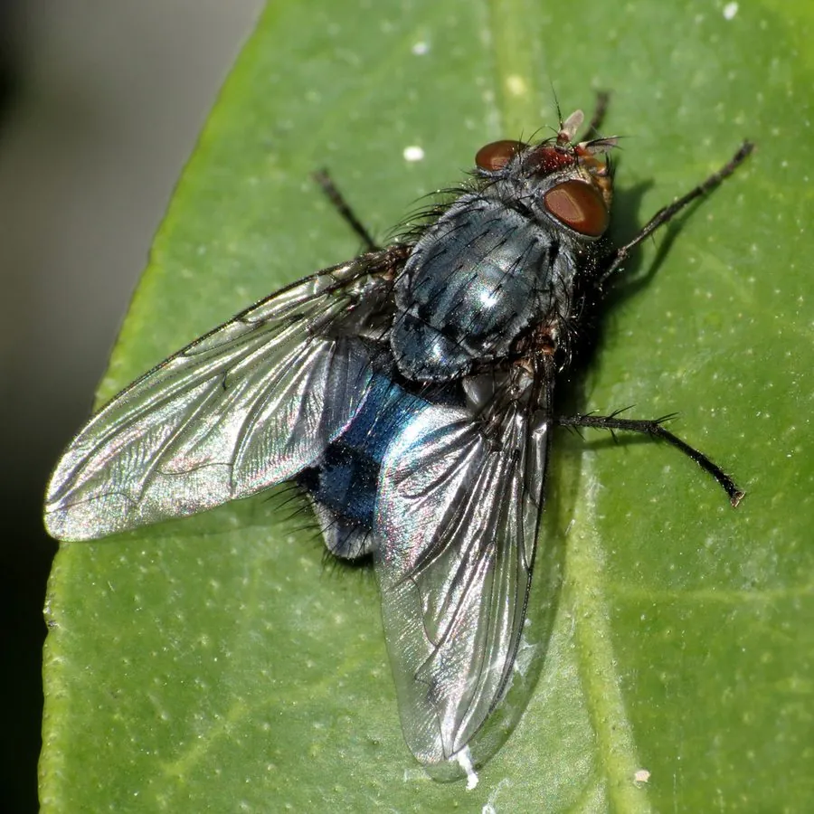

昆虫 · 动物界
红头丽蝇 Calliphora vicina

全球常见的丽蝇，头部和颊部呈橙红色、身体带蓝灰色金属光泽，能远距离闻到腐肉气味，是法医昆虫学的重要物种。
- 分类
- 门节肢动物门纲昆虫纲目双翅目科丽蝇科属丽蝇属
- 栖息环境
- 人类居所、畜舍、垃圾堆、腐肉与动物尸体附近
- 地理分布
- 全球分布，温带和亚热带地区常见
- 保护级别
- IUCN 暂无评估；中国未列入国家重点保护名录
物种志
红头丽蝇体长 6–12 毫米，头部有一对暗红色的大复眼，颊部呈橙红色，胸部呈灰蓝色并带黑色纵纹，腹部呈深蓝色或蓝绿色金属光泽，整体毛茸茸的，外观与绿头苍蝇相似但颜色偏蓝。它飞行能力强，能在数公里外嗅到腐肉或动物尸体的气味。
红头丽蝇呈世界性分布，栖息于人类居所、畜舍、垃圾堆和野外环境，成虫取食花蜜、树液和腐烂有机物，幼虫（蛆）生活在腐肉、动物尸体和垃圾中，取食腐烂组织。雌蝇一次可产 100–300 枚卵，在适宜温度下约一天即可孵化，幼虫经三个龄期后化蛹，一代约需 2–4 周。它对腐败气味极为敏感，是最早到达尸体的昆虫之一；法医昆虫学常利用其幼虫的发育阶段推断死亡时间。它不主动叮咬人，但可能携带病菌，应注意环境卫生。
形态与习性
- 食性成虫取食花蜜、树液；幼虫取食腐肉和腐烂组织
- 体长6–12 mm
- 寿命成虫约 2–4 周
- 繁殖卵生，一次 100–300 枚，约 1 天孵化
- 活动节律昼行性，温暖时活动频繁
- 生态作用最早到达尸体的昆虫之一，可用于法医推断死亡时间
趣味知识
- 红头丽蝇能在数公里外闻到腐肉气味，是最早到达尸体的昆虫之一。
- 法医昆虫学通过红头丽蝇幼虫的发育阶段，可以推断死亡时间。
- 它头部橙红、身体带蓝灰金属光泽，外观与绿头苍蝇明显不同。